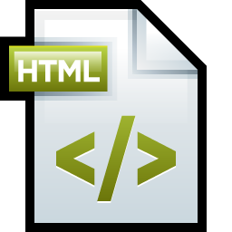

This page hosts some articles I'm writing. The article source is hosted on a public GitHub project. I've got quite a backlog to write. This will help get some of them out there and help with review.
| Article | Builds | State | Last Update | Author |
|---|---|---|---|---|
| JAX-WS Bindings |  | Register WAS servers with RAD | August 24, 2014 12caff5 |
Paul Glezen |
| WS-Sec and SOAP-UI | First Version | September 30, 2014 213c4c |
Paul Glezen |
The content is entered in DocBook format. Writing a DocBook document from beginning-to-end is not for the faint of heart. But once you get your favorite XML tools configured, it's not too bad. The format of the XML input file is straight forward when you have a sample to work with. For the time being, I handle the builds (renderings into the various formats).